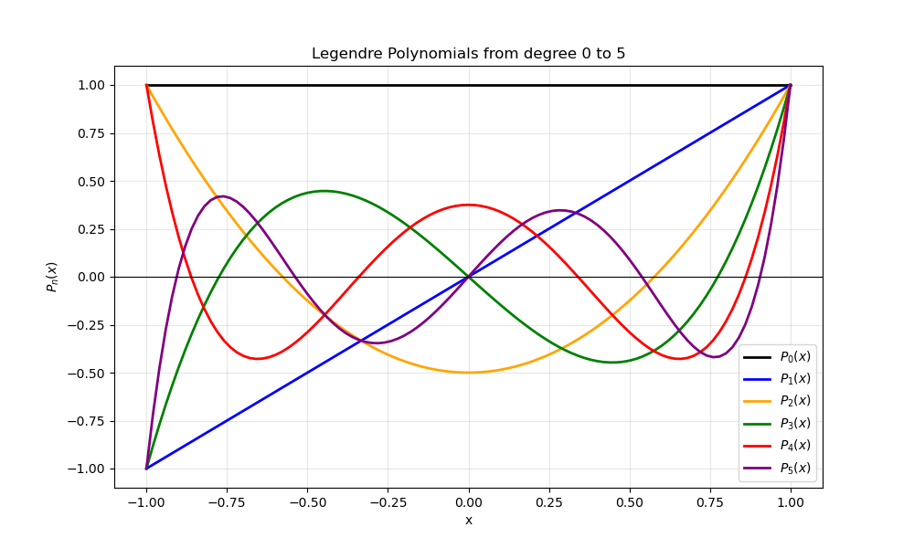

Exercise 3 (Due 08.12.2025)#
20题 第一问，配置并运行左右文件 我改了：list里面加第一行，让cmake以新版本运行
第二行，告诉 CMake 这是一个 C++ 项目。 第三行，添加其他文件夹下的hpp
All documents we mentioned can be found in branch “Exercise2”.
Exercise 17.4.1#
Q4: Question Review#
We already have the main funtion
with initial condition: \(U_c(0) = U_0(0)\)
and assumption:
\(U_c(t)\) is the unknown quantity
\(U_0(t) = cos(100*pi*t)\)
R = 100
C = \( 10 ^{-6}\)
Q4.1 : Rewrite the system to antonomous form#
We see that in the function, there are some terms realted to t. Now we define a new vector:
then the new vecotr:
Finally we get the autonomous ODE:
with initial value
Q4.2 : Numerically solve the problem with 3 methods#
In order to compare the methods: Explicit Euler, Implicit Euler and Crank Nilcolson method, add three head files: RCRHC.hpp RCCircuit.hpp and RHS.hpp
Modify the previous main document, change the model from mass-spring to RC circuit. The main files are xian.cpp yin.cpp and cn.cpp. After getting the csv files, plot and analyze.
Attention: Here we choose fixed step N = {50, 100, 200,300} and T = 0.2 to compare. In this case, the explicit method is not stable and the numerical solution blows up. So we put explicit euler method seperately and add log-log plot to see the error.
Plot#
Explicit Euler method in different time step (BLOW UP)


Implicit Euler vs Crank Nicolson in different time step


Error Analysis


Conclusion#
Explicit Euler is unstable for the RC circuit. The step sizes Δ𝑡=𝑇/𝑁 violate the stability limit Δ𝑡<2𝑅𝐶, leading to rapid blow-up.
Implicit Euler is stable but overly damped. As an A-stable first-order method, it does not diverge, but it introduces strong numerical dissipation.
Crank–Nicolson gives the best results. It is A-stable, second-order accurate, and preserves oscillation amplitude without artificial damping.
Convergence behavior: Explicit Euler → 1st order (unstable here) Implicit Euler → 1st order (stable but dissipative) Crank–Nicolson → 2nd order (accurate and stable)
Overall: For this stiff RC system, Crank–Nicolson is the best method.
Exercise 18.4#
Q1 & Q2: Implementation of AutoDiff Class. Overall Process.#
Extended the provided
autodiff.hpplibrary to include additional useful operators. Specifically, subtraction (operator-), negative sign operator and division (operator/) by applying the quotient rule.Added some more mathematical functions like
cos,expandlogthat acceptAutoDiffvariables and computed correctly its derivatives by implementing the chain rule.Verified the correctness of these new operators using
demo_autodiff_new.cpp.
Q3: Legendre- Polynomials. Overall process.#
Implemented the recursive formula to compute Legendre-polynomials. Since our
AutoDiffclass supports templates, the same function calculates both values and derivatives:P[k] = ((T(2 * k - 1) * x * P[k - 1]) - T(k - 1) * P[k - 2]) / T(k);
Created
test_legendre.cppto generate data (with step 0.02) for Legendre-polynomials up to order \(n=5\) in the interval \([-1, 1]\).Created the python script
plot_combined.pyto visualize the family of polynomials and their derivatives.
Q3: Plots#
Plot 1: Legendre-Polynomials (Orders 0 to 5)#

Plot 2: Legendre-Polynomials Derivatives (Orders 1 to 5)#
Note: Derivative of the Polynomial or order 0 is not shown because its value is 0, so plotting it would make the graphic much smaller to show that horizontal line at 0 making it difficult to see the other polynomials derivative values.

Q3: Conclusion#
As seen in Plot 1, all polynomials strictly satisfy the theoretical condition \(P_n(1) = 1\), confirming the numerical stability of the recursive implementation.
Parity and Symmetry: The plots show the parity properties of Legendre-polynomials:
Even orders (\(P_0, P_2, P_4\)) are symmetric about the Y-axis (even functions).
Odd orders (\(P_1, P_3, P_5\)) are antisymmetric (odd functions), satisfying \(P_n(-1) = -1\).
Derivative Behavior: Plot 2 shows that derivatives oscillate with increasing amplitude near the boundaries. For the order 5 polynomial, the derivative at \(x=1\) take the value 15 which is the theoretical prediction \(P'_n(1) = \frac{n(n+1)}{2}\).
The derivative inverts the parity: for an even polynomial, \(P'_n\) becomes an odd function (crossing zero at the origin) and vice versa.
Exercise 18.5 — AutoDiff Pendulum#
Overall Process#
Adapted the C++ file
ex18_5.cppto simulate the nonlinear pendulum using
with AutoDiff-based Jacobian evaluation.
Generated output trajectory file:
ex18_5.csvCreated Python scripts to plot:
pendulum_time.png— Time evolution of θ(t) and ω(t)pendulum_phase.png— Phase portrait (θ vs ω)
Plots#
Plot 1 – Time Evolution of Pendulum (Explicit Euler)#

This plot shows the temporal evolution of the pendulum state variables:
\(\( \theta(t) \)\) : angular displacement
\(\( \omega(t) \)\): angular velocity
Euler integration introduces numerical energy growth over time.
Plot 2 – Phase Plot (Explicit Euler)#

This is the θ–ω phase portrait of the nonlinear pendulum.
A true physical pendulum would trace closed orbits (constant energy), but explicit Euler causes energy to drift.
Conclusion#
The explicit Euler method behaves numerically unstable for oscillatory systems like the pendulum.
The time evolution plot shows that both \(\( \theta(t) \)\) and \(\( \omega(t) \)\) exhibit increasing amplitude, indicating energy gain.
The phase portrait spirals outward instead of forming closed loops:
This means energy is not conserved numerically.
The trajectory grows unphysically over time.
AutoDiff successfully computes Jacobians for the nonlinear pendulum model.
Exercise 19.4 — Comparison of RK2, RK4, Gauss–Legendre (s=2), and Radau IIA (s=2)#
Overall Process#
Implementation of a generic ExplicitRungeKutta time-stepper
Created
ExplicitRungeKuttaclass inexplicitRK.hppthat takes an arbitrary Butcher tableau
((A,b,c)) with strictly lower triangular (A) (explicit RK).
Definition of specific Butcher tableaus
Added setup routines for
RK2 (Heun)
RK4 (classical 4th-order)
Gauss–Legendre IRK (s=2)
Radau IIA IRK (s=2).
Comparison driver
Implemented
Rk_compare.cppusing the ASC-ODE framework and the above time-steppers.For each method and each τ, we solve the mass–spring system on ([0,8\pi]) and write CSV files
ex19_4_rk2.csv,ex19_4_rk4.csv,ex19_4_irk_gauss2.csv,ex19_4_radau2a.csv.
Postprocessing / plotting
plot_RK_methods.py: time evolution and phase plots for each τ.plot_RK_errors.py: error vs time, using the exact solution (y(t)=\cos t), (v(t)=-\sin t).
Plots#
Below we summarize the key graphical outputs (only representative examples are shown; full set available in the repository).
Plot 1 — Time Evolution (τ = 0.01)#
All four methods overlap almost perfectly.
Small step size ⇒ high accuracy for all methods; the oscillation keeps correct amplitude and phase.
 #
#
Plot 2 — Time Evolution (τ = 0.5)#
Differences become visible:
RK2 starts to lose phase accuracy and amplitude.
RK4 performs better, but a small phase drift appears.
Gauss–Legendre and Radau IIA remain stable and stay close to the true oscillation.

Plot 3 — Time Evolution (τ = 2.0)#
RK2 becomes completely unstable and diverges.
RK4 already shows strong distortion.
Radau IIA heavily damps the oscillation (L-stable behavior).
Gauss–Legendre remains bounded but with reduced accuracy due to the very large τ.

Plot 4 — Phase Portraits (τ = 0.01)#
All methods produce nearly perfect circular phase trajectories.
This corresponds to almost energy-conserving behavior at small τ.
 #
#
Plot 5 — Phase Portraits (τ = 0.5)#
RK2 spirals outward ⇒ artificial energy gain.
RK4, Gauss–2, and Radau IIA stay close to the exact circle; trajectories remain bounded.
Plot 6 — Phase Portraits (τ = 2.0)#
RK2 spirals dramatically outward (complete loss of stability).
RK4 still oscillatory but clearly distorted.
Gauss–Legendre stays bounded.
Radau IIA spirals inward due to numerical damping (L-stability).
Plot 7 — Error vs Time#
For each τ, the error is computed as
[
\text{err}(t) = \big|,(y_{\text{num}}(t),v_{\text{num}}(t)) - (\cos t,-\sin t),\big|.
]
τ = 0.01 and τ = 0.1#
RK2: small but steadily growing error.
RK4, Gauss–2, Radau IIA: extremely small errors; curves almost coincide.


τ = 0.5#
RK2: error of order O(1) over the time interval.
RK4: mild growth, still acceptable.
Gauss–2 and Radau IIA: error stays very small and almost bounded.

τ = 1.0 and τ = 2.0#
RK2: error grows catastrophically (instability).
RK4: significant drift but still bounded.
Gauss–Legendre: stable with moderate error.
Radau IIA: best stability; error remains small even for τ = 2.0.

Conclusions#
ExplicitRungeKutta implementation#
The generic
ExplicitRungeKuttatime-stepper successfully handles arbitrary explicit Butcher tableaus with a lower triangular (A).RK2 and RK4 are obtained only by providing their coefficients, confirming that the implementation is method-agnostic and reusable.
RK2 (Explicit Heun)#
Second-order accuracy; works well only for small τ.
For τ ≥ 0.5, strong phase and amplitude errors accumulate.
For τ ≥ 1.0, RK2 becomes numerically unstable for the oscillatory system.
RK4 (Classical Explicit)#
Much better long-time accuracy than RK2.
Still not A-stable: for very large τ, phase errors become dominant.
Reasonable choice for moderate τ when an explicit scheme is required.
Gauss–Legendre IRK (s=2)#
A-stable and symplectic.
Preserves the qualitative structure of the oscillation very well, even for larger τ.
Error remains bounded for all tested step sizes; phase plots stay close to a circle.
Radau IIA IRK (s=2)#
L-stable implicit method: damps high-frequency / stiff components.
Extremely robust for large τ; the solution does not blow up.
Shows numerical damping on this pure oscillatory problem, but has the best stability among all tested methods.